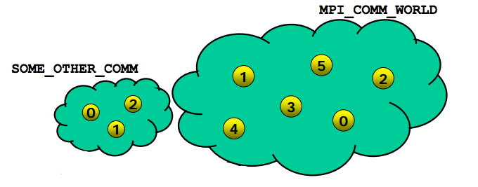

Introduction to MPI¶
What is MPI ?¶
Message Passing Interface (MPI) is a subroutine or a library for passing messages between processes in a distributed memory model. MPI is not a programming language. MPI is a programming model that is widely used for parallel programming in a cluster. In the cluster, the head node is known as the master, and the other nodes are known as the workers. By using MPI, programmers are able to divide up the task and distribute each task to each worker or to some specific workers. Thus, each node can work on its own task simultaneously.
Since this is a small module, we will be focusing on only important and common MPI functions and techniques. For further study, there are a lot of free resources available on the Internet.
Why MPI ?¶
There are many reasons for using MPI as our parallel programming model:
- MPI is a standard message passing library, and it is supported on all high-performance computer platforms.
- An MPI program is able to run on different platforms that support the MPI standard without changing your source codes.
- Because of its parallel features, programmers are able to work on a much larger problem size with the faster computation.
- There are many useful functions available in the MPI Library.
- A variety of implementations are available.
How do I write an MPI program ?¶
In order to get the MPI library working, you need to include the header file #include <mpi.h> or #include “mpi.h” in your C code.
MPI Program Structure¶
Like other programming languages you have seen, program that includes MPI library has its structure. The structure is shown in the figure below:

Figure 3: MPI program structure Obtained from computing.llnl.gov [1]
A MPI program is basically a C program that uses the MPI library, SO DON’T BE SCARED. The program has two different parts, one is serial, and the other is parallel. The serial part contains variable declarations, etc., and the parallel part starts when MPI execution environment has been initialized, and ends when MPI_Finalize() has been called.
Communicator: a set of processes that have a valid rank of source or destination fields. The predefined communicator is MPI_COMM_WORLD, and we will be using this communicator all the time in this module. MPI_COMM_WORLD is a default communicator consisting all processes. Furthermore, a programmer can also define a new communicator, which has a smaller number of processes than MPI_COMM_WORLD does.
Figure 4: MPI_COMM_WORLD Obtained from computing.llnl.gov [2]
Processes: For this module, we just need to know that processes belong to the MPI_COMM_WORLD. If there are p processes, then each process is defined by its rank, which starts from 0 to p - 1. The master has the rank 0.
Some Common Functions:¶
The following functions are the functions that are commonly used in MPI programs:
MPI_Init(&argc, &argv)
This function has to be called in every MPI program. It is used to initialize the MPI execution environment.
MPI_Comm_size(comm, &size)
This function determines the number of processes in the communicator. The number of processes get store in the variable size. All processes in a communicator have the same value of size.
MPI_Comm_rank(comm, &rank)
This function determines the rank of the calling process within the communicator. Each process is assigned uniquely by integer rank from 0 to number of processes - 1, and its rank gets stored in the variable rank.
MPI_Get_processor_name(name, &len)
This function returns the unique processor name. Variable name is the array of char for storing the name, and len is the length of the name.
MPI_Wtime()
This function returns an elapsed wall clock time in seconds on the calling processor. This function is often used to measure the running time of an MPI program. There is no defined starting point; therefore, in order to measure the running time, a programmer needs to call two different MPI_Wtime(), and find the difference.
MPI_Finalize()
This function terminates the MPI execution environment. MPI_Finalize() has to be called by all processes before exiting.
Example 1: Hello World MPI¶
1 2 3 4 5 6 7 8 9 10 11 12 13 | #include <stdio.h>
#include <mpi.h>
int main (int argc, char *argv[]) {
int rank, nprocs;
MPI_Init (&argc, &argv); /* creates MPI execution environment */
MPI_Comm_rank (MPI_COMM_WORLD, &rank); /* get current process rank */
MPI_Comm_size (MPI_COMM_WORLD, &nprocs);/* get number of processes */
printf("Hello world from process %d of %d\n", rank, nprocs);
MPI_Finalize(); /* terminates the MPI execution environment */
return 0;
}
|
| Comments: | In this hello world program, it illustrates how to use some basic functions of MPI. First, it initializes the MPI execution environment. Then it prints “Hello world from process [rank] of [number of processes]”. Finally, it terminates the MPI execution environment. |
|---|
You should eventually try to compile and run this code on your cluster account. Before that, we will explain a bit more about communication between processes, showing you another ‘Hello World’ Example. Then we will show you how to compile and run these programs.
References
| [1] | https://computing.llnl.gov/tutorials/mpi/ |
| [2] | https://computing.llnl.gov/tutorials/mpi/ |

{kind=link}